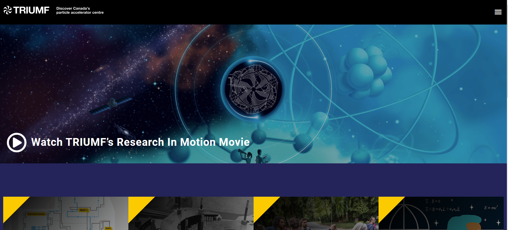
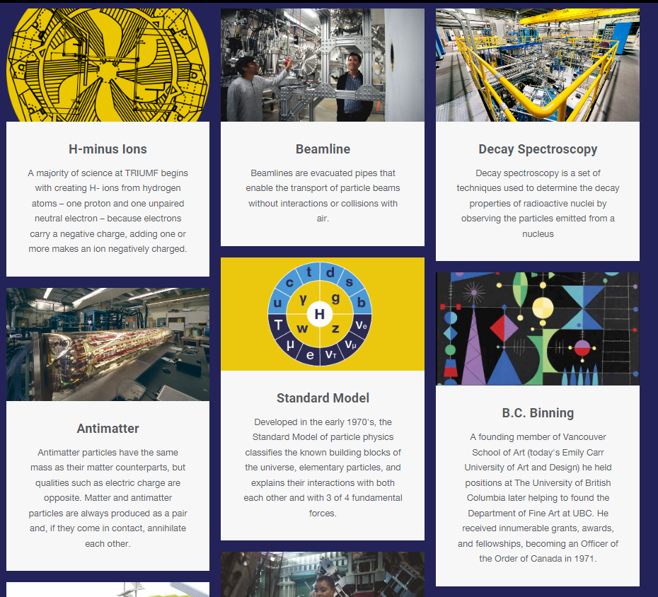
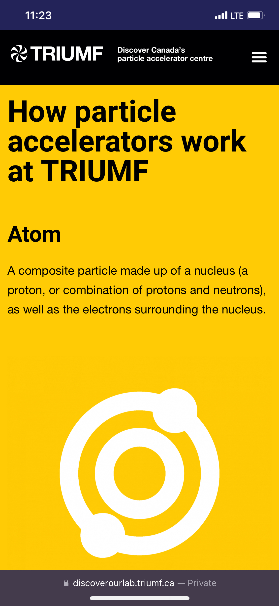
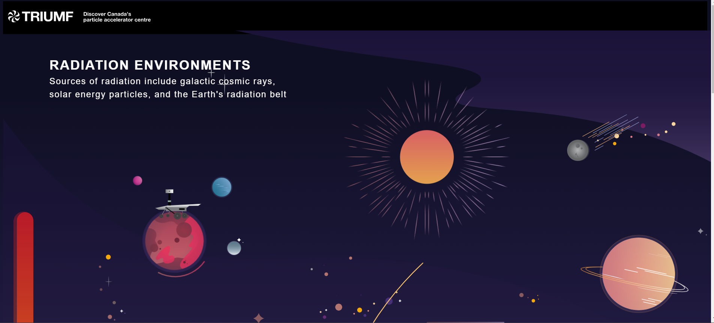
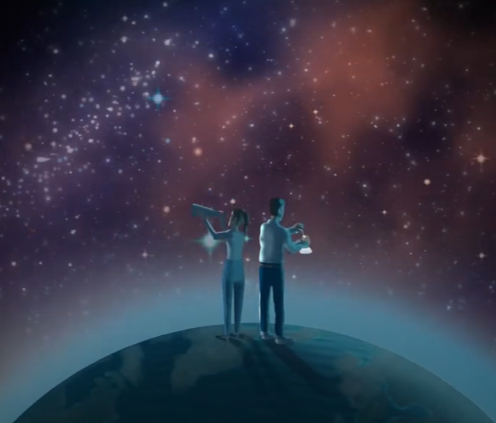

What is TRIUMF, and who is the website actually for?
TRIUMF is Canada's national particle physics accelerator, a world-class research facility on the UBC campus in Vancouver that operates one of the world's largest cyclotrons and hosts experiments in nuclear physics, materials science, and life sciences.
The "Discover Our Lab" outreach website exists to make that science accessible to the general public (mostly students but also curious adults, teachers, press, and retirees). The site had been built by people who worked there and were used to giving physical tours, and it showed.

The core misalignment: the site's navigation categories made perfect sense if you already understood TRIUMF's internal research divisions. If you were a curious student visiting for the first time because public tours had been cancelled due to COVID, the structure was intimidating.
Understanding the problem
Before touching a single page, I needed to understand the existing audience and the navigation assumptions built into the site. My research process:
🔍 Research methods used
- ◦Internal surveys to identify usability pain points across staff and external users
- ◦Card-sorting sessions to understand how users mentally grouped site content
- ◦Full content audit of the existing site: categorising pages by audience, quality, and engagement
- ◦Competitive analysis against CERN, Bruce Power, Fermilab, and other science outreach sites
- ◦Benchmarked navigation patterns and content strategies across peer institutions
The facility tour: from PDF to interactive experience
The original facility tour was identical to a static brochure, but on a website. The brief was to replace it with something that actually worked for people visiting the site on a phone or laptop.
I built a fully interactive facility map using custom HTML, CSS, and jQuery within the Elementor environment. Each building on the site was clickable, linking through to dedicated pages for each facility with photography, explanatory content, and media.


The map was the most technically complex piece. Elementor is a visual page builder, not a coding environment. Getting numbered markers, clickable regions, hover states, and sidebar synchronisation working required writing custom jQuery that hooked into Elementor's DOM. It was a constraint-driven build and I'm proud of how clean the output was.
Making particle physics legible to everyone
The site's content assumed a baseline understanding of terms like "cyclotron," "beamline," and "isotope" that most general visitors simply don't have (most tours were for elementary school students).
I researched, designed, and built an interactive scientific glossary in collaboration with science educators. I iterated between a hover-based tooltip format and a dedicated page format before landing on the page (tooltips were too easily missed on mobile).

The glossary design decision I'm most proud of: mixing scientific terms with cultural and historical context cards (TRIUMF's art collection, key figures, the founding story). This made the glossary a discovery tool that surfaced parts of TRIUMF's heritage.
Rebuilding the navigation around how visitors think
The original navigation used TRIUMF's internal division structure as its organising principle. The redesigned IA was built around the questions a public visitor actually arrives with: "What is this place?", "What research happens here?", "How can I explore the lab?", "What's the history?"

The key structural change was separating public-facing discovery pathways (Tour, Arts, History, Events) from researcher-facing technical content which still existed on the main TRIUMF.ca but no longer cluttered the outreach navigation. Two audiences, two sites, each designed for its actual user.
Making it work for everyone, on every device
A significant portion of public visits to science outreach sites come from mobile devices, most likely students researching on their phones, people sharing links on social media. The existing site had no meaningful mobile responsiveness for its content-heavy pages.


Contrast ratios
Audited all text/background combinations against WCAG AA standards. Updated colour pairings across content pages where contrast was failing.
Non-colour visual cues
Added icons, underlines, and shape indicators to all interactive elements so colour wasn't the only signal for clickability or state.
Mobile responsiveness
Adapted interactive assets (the map, the tour navigation, the glossary) into mobile-friendly alternative versions where the desktop version couldn't translate.
Text sizing & alt text
Ensured minimum text sizes across all content types. Added descriptive alt text to TRIUMF's extensive scientific illustration library.
Designing for subject matter you don't understand yet
You can't design good science communication if you don't understand what you're communicating. I spent real time learning what a cyclotron actually does, why ISAC matters, what a beamline is, and how radiation environments connect to TRIUMF's medical isotope work.

The design work got better as my understanding of the science improved. The glossary was better because I knew which terms people actually confused. The tour was better because I understood why each facility was interesting. The navigation was better because I understood the difference between what TRIUMF does for particle physics and what it does for medicine.